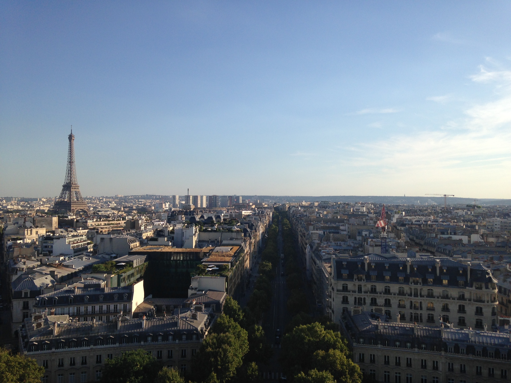

Europe
Paris has a timeless familiarity for first-time and frequent visitors, with instantly recognizable architectural icons, along with exquisite cuisine, chic boutiques and priceless artistic treasures.
Like to travel? Book with us! Travel Fellows can help you get there!
Paris has a timeless familiarity for first-time and frequent visitors, with instantly recognizable architectural icons, along with exquisite cuisine, chic boutiques and priceless artistic treasures.

Africa. There’s nowhere like it on the planet for wildlife, wild lands and rich traditions that endure. Prepare to fall in love.
On South America’s southern frontier, nature grows wild, barren and beautiful. Spaces are large, as are the silences that fill them. For the newly arrived, such emptiness can be as impressive as the sight of Patagonia’s jagged peaks, pristine rivers and dusty backwater oases.
In its enormous scale, Patagonia offers a wealth of potential experiences and landscapes.
We pride ourselves with the positive testimonials we receive from our clients; however we always strive to improve our services every day. Hearing what our returning tour participants have to say plays a vital role in understanding how we can enhance our tour programs, airline, hotel and guide selections for future participants to come. We encourage our clients to give us their feedback, both positive and negative, so we can better serve our clients in the future. Thank you!